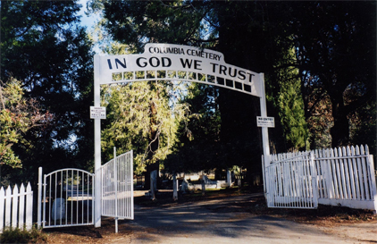
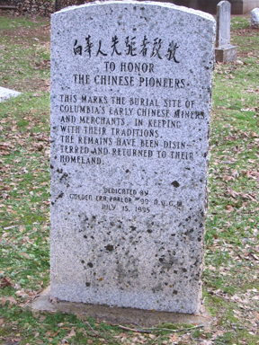
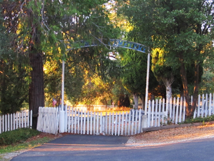
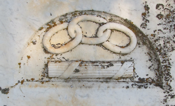
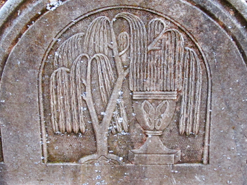
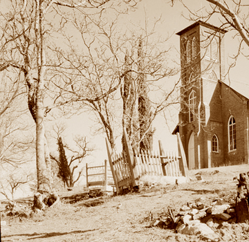
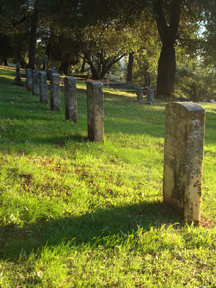
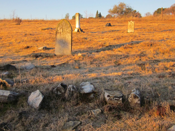

COLUMBIA CEMETERIES.
1852 - Present
(AKA - RESERVOIR HILL, CEMETERY HILL.)

Main Gate to the Columbia Cemetery.

1852 June 14 - Hugh Gillis was buried in a public cemetery. He is now in the section of the I.O.O.F Cemetery which claims the oldest known tombstone in any of the cemeteries. He may have been a Mason.
1852 June 23 - The first cemetery in Columbia was a "pretty little graveyard which had been laid out on the hill west of Columbia with gravelled walks, a neat painted fence and large gates." - (Sonora Herald). The orginal Public Cemetery is shown on John Wallace's field map, of the Tuolumne County Water Company's ditch in the Spring of 1853. The grave yard was south of State Street and west of Silver Street. (Barbara Eastan 1962)
1853 January - Gold is found in the hill which later becomes known as Gold Hill. The
miners consequently cause some desecration of burial locations.
1852-55 - Chinese were buried on Reservoir hill for three years prior to any Caucasians. (Hart R. Tambs - 1991)
1855 August 2 - The Masons appoint a committee to "select suitable grounds for a
cemetery." (P. Y. Perry)
1855 September 7 - The Masons filed claim to the north portion of "their cemetery". (P. Y. Perry)
1855 October (Thursday) - "At two o'clock...a small party arrived in the old burial ground with the remains of (John) Barclay. The arrangements were all made with good care, but there were few to do the last acts of love and respect. Martha (Carlos Barclay) was there, with a few female friends, and the ceremonies were anything but imposing." (from "Closing Scenes" of the Columbia Gazette 1855)
1855 October - "At four o'clock, a long line of mourners and friends wound their way up the hill leading to the new burying ground. Many of our most respectable citizens were there; ladies of worth, and gentlemen of standing, were present with the remains of John H. Smith. The coffin was covered with the ensign of our country, for the deceased had served under it, and assisted to defend it." (from "Closing Scenes" of the Columbia Gazette 1855)
1855- The I.O.O.F also start their cemetery next to the Masons without filing.
1857 July 1 - The Town Trustees passed an ordinance legally establishing the Public Cemetery on Reservoir Hill, next east to the Lodge Cemeteries. (P. Y. Perry)
1857 - A burial cost $10, digging and closing grave $6, the sexton fee $2 and an additional fee of $2 for maintenance and repair. (P. Y. Perry)
More to follow...........
NOTE: There are seven divisions for hunting a relative buried on these hills. A major name index will follow soon. But for now it would be advised to search each of the 7 sections when looking for someone. Also there is a list that was created as someone died and was buried in these hills. I plan to create that page even though for the most part many of the locations of the first 500 individuals are no longer marked.

China Plot Memorial
Link to the known who were buried in the China Plot.

The old entrance to the Masonic Cemetery.
Link to the known buried in the Masonic Cemetery.

I.O.O.F. Motif
Link to the known buried in the Odd Fellows Cemetery.

The weeping willow and urn motif
Link to the known buried in the Public Cemetery.

St. Anne's cemetery - 1934.
Link to the known buried in the St. Anne's Cemetery.

Portion of the G.A.R. section.
Link to the known buried in the G.A.R. Locations.

Portion of Springfield Cemetery.
Link to the known buried in the Springfield.


RESPECT OUR CEMETERIES!!
This page is created for the benefit of the public by
Floyd D. P. Øydegaard.
Email contact:
fdpoyde3 (at) yahoo (dot) com
A WORK IN PROGRESS,
created for the visitors to the Columbia State Historic park.
� Columbia State Historic Park & Floyd D. P. �ydegaard.